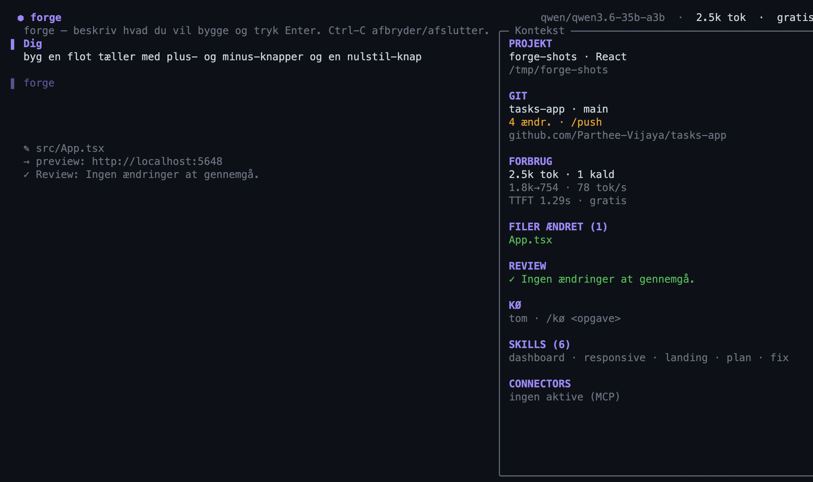
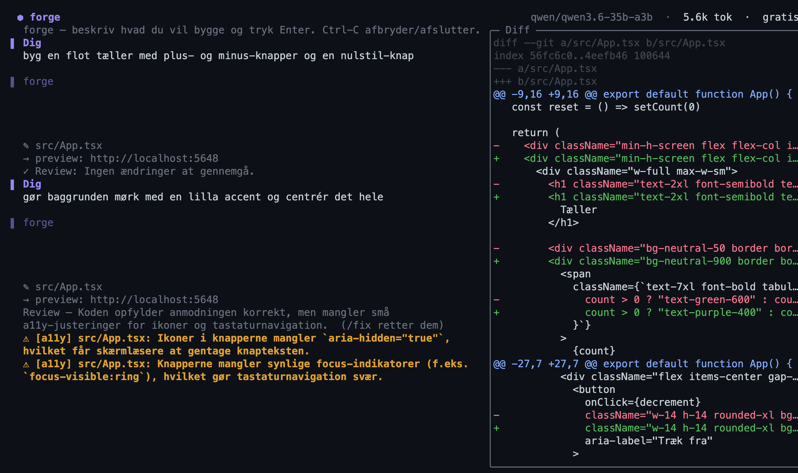
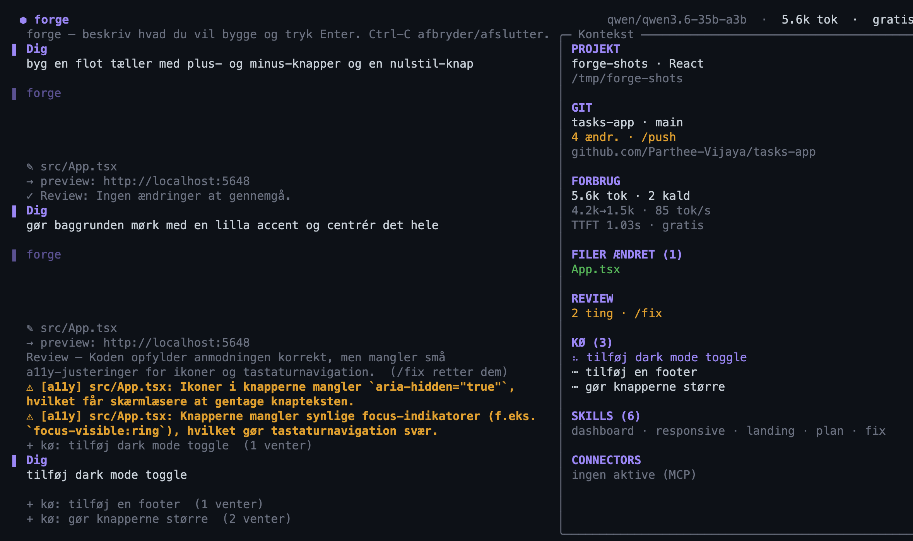

Kom i gang med vibecoding — gratis og på din egen Mac.
Stormbreaker er en macOS-app lavet til dig, der er ny i vibecoding. Skriv i almindeligt sprog hvad du vil bygge, så skriver en AI-agent en rigtig app — React, Svelte, Vue eller Next.js — direkte på din Mac og viser et live-preview. Tanken er enkel: både appen og de AI-modeller du bruger er primært open source og gratis, så du kan bygge til dit eget formål uden at tænke på abonnementer, API-regninger eller skjulte omkostninger. Brug den som app — eller direkte i terminalen med en lige så stærk CLI.
De fleste vibecoding-værktøjer kører i skyen og koster penge pr. besked. Stormbreaker vender det om: kør gratis, open-source modeller lokalt på din egen maskine, så der ikke er noget der tikker op imens du lærer og eksperimenterer.
Gratis lokale modeller
Kør open-source modeller som Qwen, Llama, Mistral eller Gemma lokalt via Ollama eller LM Studio. Ingen konto, ingen kvote, ingen regning.
Appen er open source
Stormbreaker er selv open source og gratis. Hent den, kig i koden, og byg videre til dit eget formål — helt uden binding.
Cloud er valgfrit
Vil du have en større model, kan du valgfrit tilføje din egen API-nøgle (OpenAI, Anthropic, Google Gemini, NVIDIA) — men det er aldrig nødvendigt for at komme i gang.
Derfor Stormbreaker
Bygget til at lære i
Den samme vibecoding-oplevelse som sky-værktøjerne — bare privat, gratis og lavet til nybegyndere.
Lavet til nybegyndere
En guidet tutorial peger på hver del af appen og forklarer den i almindeligt sprog, og en learning-mode forklarer fagudtryk undervejs med en altid-åben ordbog. Du behøver ikke kunne kode.
Lokalt & privat
Hele løkken — prompt → kode → preview — sker på din Mac. Dine prompts og din kode forlader aldrig maskinen.
Rigtige filer, ikke en sandkasse
Hvert projekt er en helt almindelig mappe, du selv kan åbne i en editor, køre med npm og committe til git.
Native, ikke Electron
En ægte SwiftUI-app med WKWebView-preview — hurtig opstart, lavt forbrug, og rigtig macOS-opførsel.
Sådan virker det
Fra tom prompt til app, der kører
1 Start
Beskriv hvad du vil bygge
Skriv en prompt, vælg et framework (React / Svelte / Vue / Next.js), eller start fra en skabelon. Skift mellem Build og Plan, vedhæft et skærmbillede, eller skriv / for kommandoer.
2 Slash-kommandoer
Styr prompten fra tastaturet
Skriv / for en menu. /byg og /plan skifter tilstand; /ret, /stil, /mobil og /forklar udfylder en færdig prompt for dig.
3 Byg & preview
Chat til venstre, live app til højre
Agenten streamer sine rettelser mens preview'et opdaterer via hot-reload. En statusbar viser dev-server, aktiv model og forbrug. Hver tur gemmes som et checkpoint — gendan eller se forskelle når som helst.
4 Kode
Se alt hvad agenten skrev
Et fil-træ du kan navigere med tastaturet, en editor med syntaksfarvning og linjenumre, faner for åbne filer, og et minimap. Se filer blive skrevet live, eller åbn hele projektet i din egen editor.
5 Deploy
Sæt den online
Deploy fra værktøjslinjen til Vercel, Netlify eller GitHub Pages, plus push til GitHub. Deploy-historik gemmes pr. projekt, og du får et delbart live-link tilbage.
6 Lær undervejs
Guidet tutorial & learning-mode
Ny i vibecoding? En spotlight-gennemgang forklarer hver del af appen i almindeligt sprog, og learning-mode viser forklaringskort ved milepæle — med en altid-åben ordbog over fagudtryk.
Også i terminalen
En lige så stærk CLI
Foretrækker du terminalen — eller arbejder du over SSH? storm chat giver dig en fuldskærms-TUI med præcis samme motor som appen: live fil-streaming med syntaksfarver, model-skift midt i en session, gendan via checkpoints og en Kontekst-sidebar der altid viser hvor du er. Ingen nye afhængigheder — bare Swift.

zsh — storm
# Byg og installér CLI'en — gratis og lokalt
git clone https://github.com/Parthee-Vijaya/stormbreaker-mac
cd stormbreaker-mac && bash scripts/install-cli.sh
# Kom i gangstorm# åbn (= stormbreaker) · skriv / for kommandoerstorm new min-app# nyt projekt
Hver tur gemmes som et checkpoint, så /diff viser præcis hvad der blev ændret, med farver. Bagefter gennemgår en 2. agent automatisk dit build for fejl, sikkerhed og tilgængelighed og foreslår rettelser med /fix — helt rådgivende, det blokerer aldrig.

Sidebar · GitHub · swarm
Kontekst, git og en kø — i sidebaren
Sidebaren viser forbrug (tokens, hastighed, pris) og dit git-repo live: gren, ændringer og hvor langt du er foran/bagud. Udgiv og synk uden at forlade terminalen med /github, /push, /pull og /pr. Og med /kø stiller du flere opgaver i kø — Stormbreaker bygger dem igennem én ad gangen og viser status undervejs.

Alt i kassen
Færdigbygget hele vejen igennem
Motor, workflow og platform — det hele er der.
Selv-rettende agent — kører tsc + en røgtest og retter sine egne fejl.
Line-replace / diff-rettelser, ikke kun hele filer.
Checkpoint pr. tur med gendan & diff.
Spørg om koden — read-only spørgsmål om projektet.
Flere frameworks — React / Svelte / Vue + Next.js.
Billede → UI, design-fra-link og delbare bundles.
Visuel redigering + "skift stil"-palette.
Stemme-diktering, kommando-palette og slash-kommandoer.
Statusbar, editor-faner og minimap.
Reviewer-agent — en 2. agent gennemgår hvert build for fejl, sikkerhed & tilgængelighed.
GitHub indbygget — udgiv, commit, push/pull & pull requests, med live git-status i sidebaren.
Swarm / kø — stil flere byggeopgaver i kø; de køres én ad gangen.
Åbn DMG'en og træk Stormbreaker over i Programmer.
Første gang: højreklik → Åbn og bekræft (ad-hoc-signeret, endnu ikke notariseret). Derefter åbner den normalt.
Bemærk: Stormbreaker er et aktivt personligt projekt. Det kører kun på Apple Silicon + macOS 26 og er ikke notariseret endnu, så første start kræver højreklik → Åbn. Cloud-deploy (Vercel/Netlify) kræver at deres CLI er installeret og logget ind.